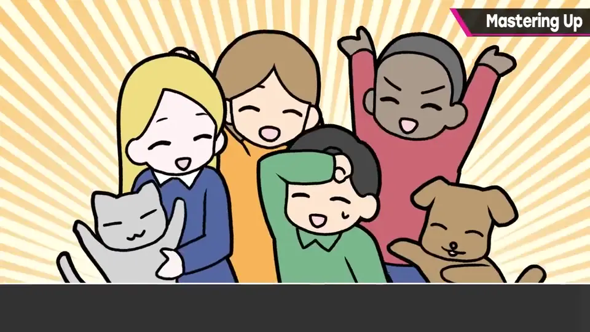
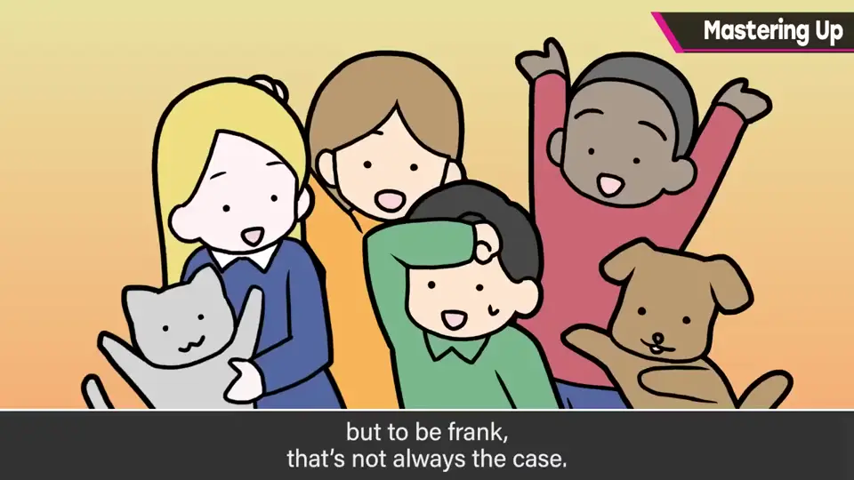
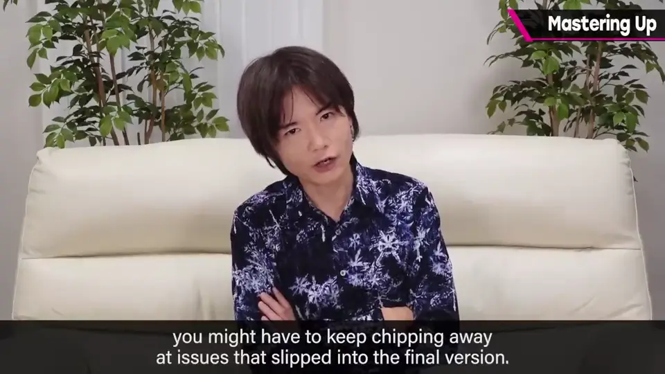
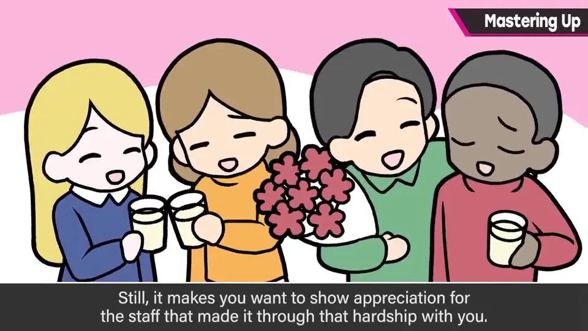
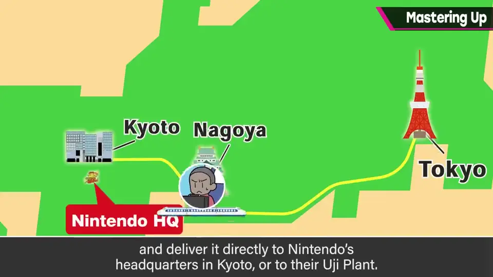
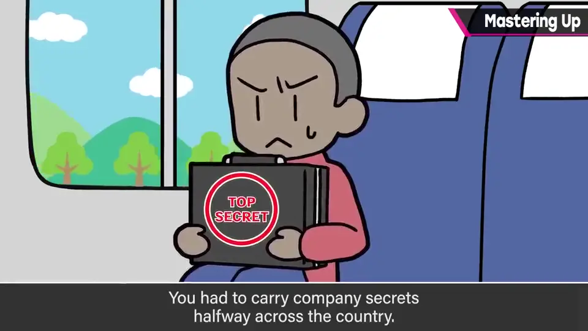
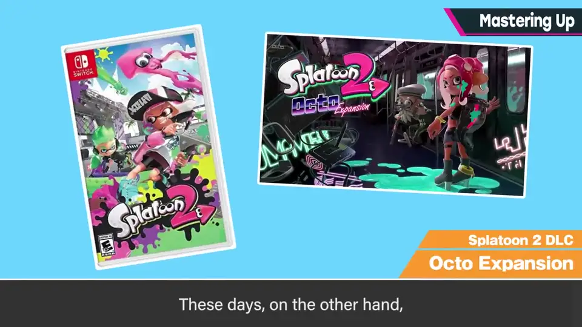
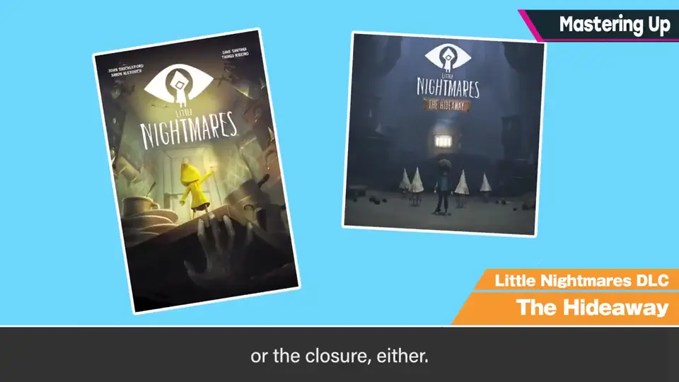
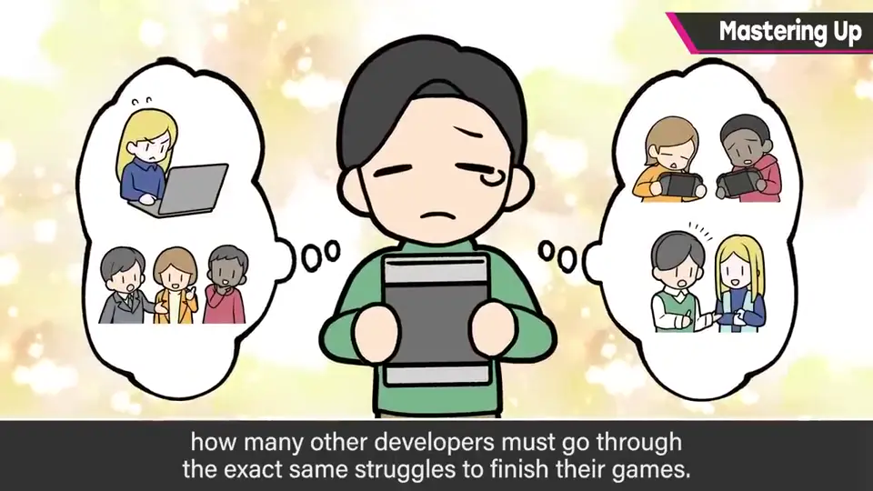
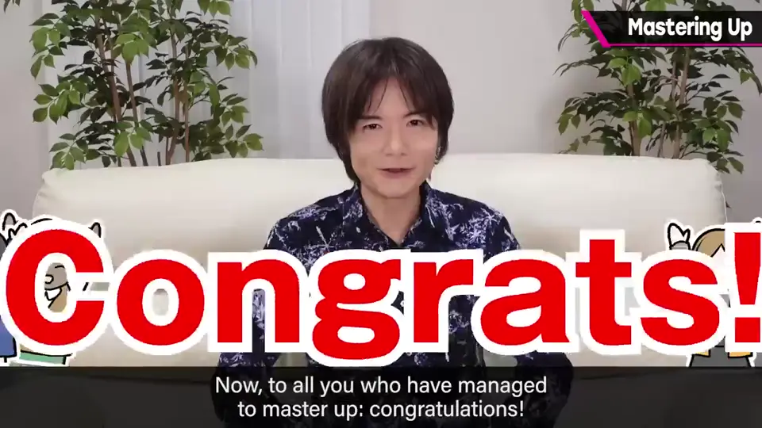

速览
花了漫长岁月和大量劳力，游戏终于完成，恭喜！完成版交付称为 Master Up（母盘完成）。你也许以为那是无比畅快的瞬间，但老实说未必如此：走到那一步，必然有过割舍某些东西的严酷判断；若能在线更新，还要继续解决母盘版里遗漏的问题。与其说畅快，不如说更像带着伤——他说自己好像每次都是这样。但仍想对同甘共苦的员工说一声辛苦了。FC 和 GB 的时代，网络还没有现在这么普及，完成的游戏是亲手提着送的：像玩笑一样，在东京完成 ROM 后紧握着它坐上新干线，直接送到京都的任天堂总部或宇治工厂——那是「希望号」还没有或刚开通的年代。怀揣机密的结晶远行，是很紧张的旅程。刻进 ROM、又没有在线更新的时代，开发虽然也会做海外移植版，但结束是干脆确定的；相比之下，如今有在线更新，「到这里就结束」的印象淡薄，可能不太畅快。但历经千辛万苦把东西做完，比什么都好；同时他也会想，许多游戏开发者都是这样艰难地迎来完成的吧。正因有过这种体会，他会心怀感激地玩别人的游戏。恭喜世界上迎来母盘完成的人们！
1. 什么是 Master Up 0:05
花了漫长岁月和劳力，游戏终于完成。完成版交付称为「Master Up」（母盘完成）。


你也许以为那一刻无比畅快，但老实说未必如此。
2. 带着伤的完成 0:30
- 走到那一步，必然有过割舍某些东西的严酷判断。
- 若能在线更新，还要继续修补母盘版遗漏的问题。


但仍然想对同甘共苦的员工说声「辛苦了」。
3. 手提 ROM 坐新干线 0:59
FC 和 GB 时代网络还不普及，完成的游戏是亲手提着送的：在东京完成 ROM，紧握着它坐新干线，直接送到京都的任天堂总部或宇治工厂。


那是「希望号」还没有或刚开通的年代。怀揣机密的结晶远行，是很紧张的旅程。
4. 结束的明确与模糊 1:38
刻进 ROM、没有在线更新的时代，即使会做海外版，结束也总是干脆确定的。


如今有在线更新，「到此为止」的感觉淡薄，可能不太畅快。
5. 感谢与祝贺 1:54
但历经千辛万苦把东西做完，这比什么都好。他也会想：许多游戏开发者都是这样艰难地迎来完成的吧。


自测题
1. 为什么 Master Up 的瞬间未必畅快？
过程中有割舍的艰难判断，且可在线更新时还要继续修补遗漏，更像带着伤。 0:35
2. FC/GB 时代游戏是怎么交付的？
在东京完成 ROM 后亲手揣着坐新干线送到京都的任天堂总部或宇治工厂。 1:07
3. 在线更新的普及让完成的感觉有什么变化？
「到此为止」的终点感变淡，没那么畅快。 1:40